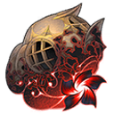
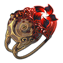
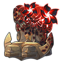

추천 광추
거짓말의 종막
추가 공격 피해와 팀 지원
효과 자세히
미끼를 중심으로 연속 공격하는 세팅.
순수 사유의 세례
치피·디버프 연동
효과 자세히
궁 이후 추가 공격 방어력 무시를 활용.
고민, 그리고 행복
치확·추가 공격 피해
효과 자세히
추가 공격 표식으로 팀 치명타 피해 지원.
별바다 순항
헤르타 상점 · 치확 대안
효과 자세히
저체력 대상 치확과 처치 후 공격력 효과를 확인.
추천 유물
사수에 잠수한 선구자 4 · 질주하는 늑대의 도람 왕조 2
- 머리

주옵션HP부옵션치명타 확률 · 치명타 피해 · 공격력% · 속도 - 손

주옵션공격력부옵션치명타 확률 · 치명타 피해 · 공격력% · 속도 - 몸통
 주옵션치명타 확률부옵션치명타 피해 · 공격력% · 속도
주옵션치명타 확률부옵션치명타 피해 · 공격력% · 속도 - 다리

주옵션속도부옵션치명타 확률 · 치명타 피해 · 공격력% - 구체
 주옵션공격력%부옵션치명타 확률 · 치명타 피해 · 속도
주옵션공격력%부옵션치명타 확률 · 치명타 피해 · 속도 - 매듭
 주옵션공격력%부옵션치명타 확률 · 치명타 피해 · 속도
주옵션공격력%부옵션치명타 확률 · 치명타 피해 · 속도
이 조합을 추천하는 이유
대공과 도람에서 공격력·치명타를 확보합니다.
밤낮의 경계를 나는 매 4 · 생명의 바커 공 2
- 머리
 주옵션HP부옵션치명타 확률 · 치명타 피해 · 공격력% · 속도
주옵션HP부옵션치명타 확률 · 치명타 피해 · 공격력% · 속도 - 손
 주옵션공격력부옵션치명타 확률 · 치명타 피해 · 공격력% · 속도
주옵션공격력부옵션치명타 확률 · 치명타 피해 · 공격력% · 속도 - 몸통
 주옵션치명타 확률부옵션치명타 피해 · 공격력% · 속도
주옵션치명타 확률부옵션치명타 피해 · 공격력% · 속도 - 다리
 주옵션속도부옵션치명타 확률 · 치명타 피해 · 공격력%
주옵션속도부옵션치명타 확률 · 치명타 피해 · 공격력% - 구체
 주옵션공격력%부옵션치명타 확률 · 치명타 피해 · 속도
주옵션공격력%부옵션치명타 확률 · 치명타 피해 · 속도 - 매듭
 주옵션에너지 회복효율부옵션치명타 확률 · 치명타 피해 · 공격력% · 속도
주옵션에너지 회복효율부옵션치명타 확률 · 치명타 피해 · 공격력% · 속도
이 조합을 추천하는 이유
매와 바커공으로 웨이브 편성의 행동 수를 확보합니다.
이 정도면 잘 키웠다
선택한 세팅 기준 · —는 확인된 수치 없음
- 종결 명함·전광
대공과 도람에서 공격력·치명타를 확보합니다.
| 스탯 | 추천 스탯 | 준종결 | 종결 |
|---|---|---|---|
| 공격력 | 3400 | — | 3600 |
| 속도 | 134+ | — | 134 |
| 치명타 확률 | 100% | — | 100% |
| 치명타 피해 | 120% | — | 160% |
세팅 기준·출처
별도 준종결 목표는 확인되지 않았습니다. 종결 표는 기본적으로 명함·전용 광추 기준입니다.
- 웨이브 편성
매와 바커공으로 웨이브 편성의 행동 수를 확보합니다.
| 스탯 | 추천 스탯 | 준종결 | 종결 |
|---|---|---|---|
| 속도 | 168 | — | — |
| 치명타 확률 | 100% | — | — |
성혼과 추천 돌파
팀 지원이면 1돌, 본인 강화 추가 공격 순환이면 2돌.
1적 받는 피해 +24/36%추천
적 HP 50% 이하에서는 36%.
2탐닉 상한 18스택추천
강화 추가 공격 발동 시 해제된 스택 35% 반환.
3필살기 +2 · 일반 공격 +1
해당 스킬과 대응 강화 스킬의 레벨을 올린다.
4필살기 공격력 +40%
3턴.
5전투 스킬·특성 +2
해당 스킬과 대응 강화 스킬의 레벨을 올린다.
6미끼 존재 시 적 저항 −20%
탐닉 획득당 피해 +4%, 최대 30스택.
추천 파티


기본 운영과 행적
기본 운영
내구 높은 대상을 미끼로 지정. 아군이 미끼를 때리면 추가 공격과 탐닉을 확보하고 필살기로 강화 발동.
행적 육성 순서
전투 스킬 → 특성·필살기 → 일반 공격. 승급 2단계 탐닉 및 6단계 팀 추가 공격 치피.
아하 속도 계산기 →